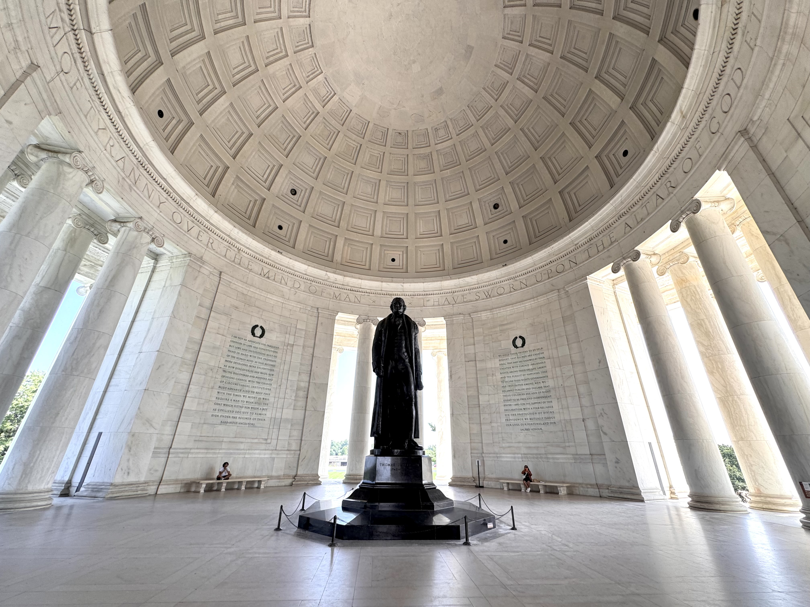
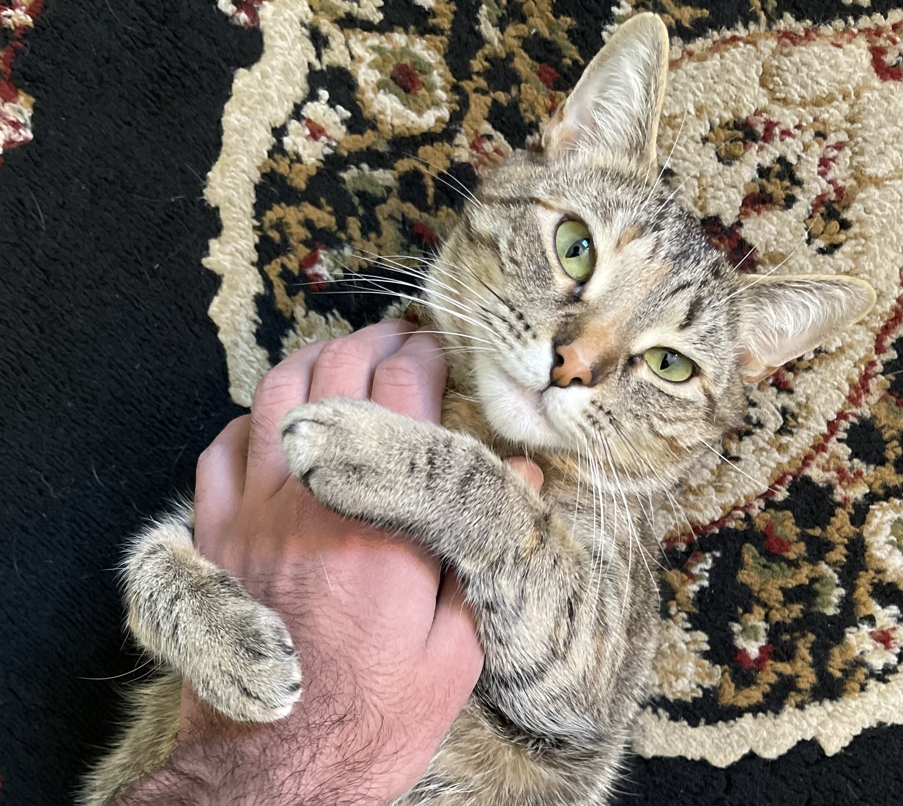

AI-Powered Python Error & Bug Detector
Python · Gemini API · AI
A Python debugging tool that uses Gemini to analyze submitted code, identify potential errors, and provide debugging feedback.
View source →Computer Science student at CUNY College of Staten Island.
I study computer science, build software, take photographs, read, and spend a considerable amount of time watching football and Formula 1.
My name is Masroor Jehangiri, I am a computer science student at CUNY College of Staten Island. With an expected graduation date of Fall 2027, I am seeking Summer 2027 internships and eventually full-time positions post graduation.
Outside of academics, some interesting facts about me: I am a convert to Islam Ahmadiyyat, I am also a first generation immigrant from Pakistan (since 2014) and I am a passionate fan of Soccer and Formula 1. In soccer I have supported Barcelona as my team and Messi as my favorite player. In Formula 1, I have always loved Red Bull Racing since Sebastian Vettel was on the team and now I absolutely love Max Verstappen. As you can see, I have a thing for red and blue, which combines to make my favorite color, purple.
Python · Gemini API · AI
A Python debugging tool that uses Gemini to analyze submitted code, identify potential errors, and provide debugging feedback.
View source →HTML · CSS · JavaScript
Built this personal website from scratch using HTML, CSS, and JavaScript. It serves as a portfolio to showcase my projects, skills, and interests.
Bachelor of Science in Computer Science
Expected December 2027 · GPA: 3.7
Data Structures · Discrete Mathematics · Web Database Applications · Computer Organization · Networking & Security
"The man who does not read good books has no advantage over the man who cannot read them" - Mark twain
The sport that has been my biggest source of enjoyment since I was 10.
Who doesn't like cars and a bit of racing action?
The most reliable source of direction in my life.
Beauty is in the eye of the beholder.




